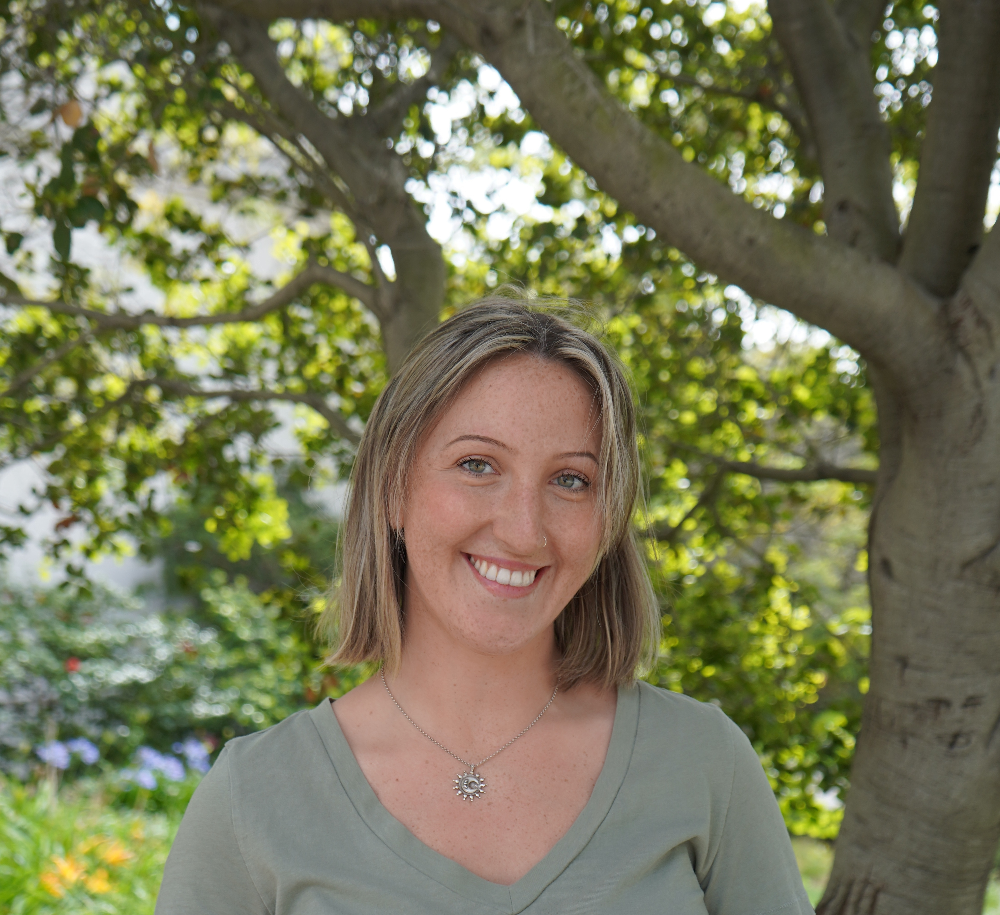

Méabh Allen

I'm a condensed matter theory PhD candidate in Joel Moore's group at UC Berkeley. I'm interested in universality in non-equilibrium quantum systems. I've been using field theory and tensor networks in recent works to study novel dynamical behaviour in critical spin systems.
I'm interested in these things for their own sake, and also for their applications in quantum computing and metrology. I am the 2024 recipient of the NSF Challenge Institute for Quantum Computation (CIQC) Seed Funding.
Outside of physics, I'm a lifelong equestrian, avid gardener, graceless yogi, and bookworm.
Selected Publications
- J. Wei, MILA, C. Wang, J. Kemp, J. E. Moore, N. Y. Yao, “Novel probes of universality via shallow critical quenches,” in preparation.
- MILA, G. Woolls, C. W. Wächtler, J. E. Moore, “Cat state preparation and the quantum Fisher information in a driven-dissipative critical spin chain,” in preparation.
- MILA and O. K. Diessel, “Novel short-time universality for critical quenches in non-equilibrium phase transitions,” in preparation.
- Y. Huang et al., “Ultrafast measurements of mode-specific deformation potentials of Bi2Te3 and Bi2Se3,” Phys. Rev. X, 13(4), 041050 (2023).
- J. A. Sobota et al., “Influence of local symmetry on lattice dynamics coupled to topological surface states,” Phys. Rev. B, 107, 014305 (2023).
Outreach and Teaching

- Organizing Committee, NSF CIQC, 2023 - Present
- CIQC Delegate, NSF Quantum Showcase on Capitol Hill, Apr. 2024
- Graduate Student Instructor, Physics 141B, Spring 2024
- Graduate Student Instructor, Physics 7A, Fall 2023

Contact

- Email: meabh_allen@berkeley.edu
- Google Scholar
- GitHub
- CV (updated May 2025)
- CIQC website